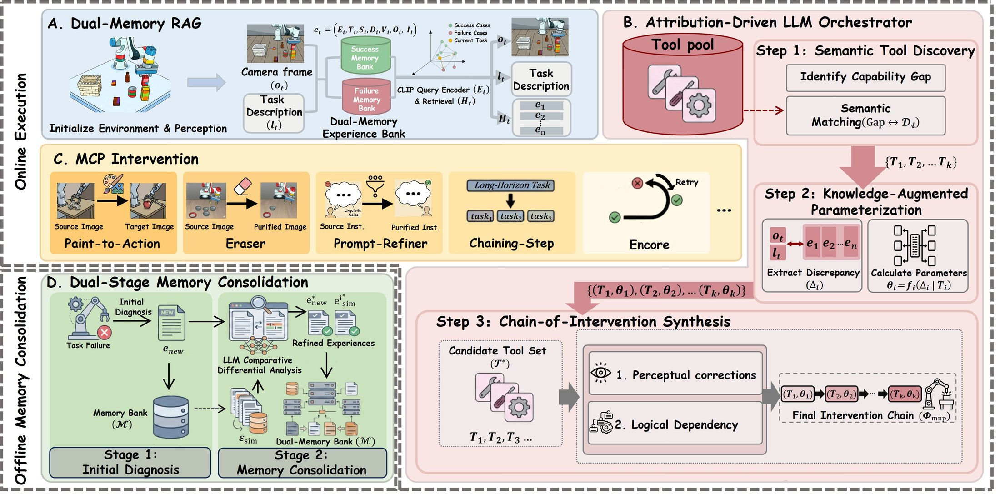

RoboHarness: A Memory-Augmented Policy Harness for VLA Robustness
Upgrading frozen Vision-Language-Action policies through in-context adaptation, without fine-tuning
1School of Computer Science, Shanghai Jiao Tong University 2Shanghai Syslong Information Technology Co., Ltd. *Equal contribution · †Corresponding author
Abstract
Despite the promise of Vision-Language-Action (VLA) models as generalist robotic controllers, their robustness against perceptual noise and environmental variations in out-of-distribution (OOD) tasks remains fundamentally limited by the absence of long-term memory, causal failure attribution, and dynamic intervention capability. To address this, we propose RoboHarness, a memory-augmented policy harness that upgrades frozen VLA policies for robust in-context adaptation without parameter fine-tuning. Specifically, RoboHarness operates through an online pipeline of contrastive Dual-Memory Retrieval-Augmented Generation (RAG), an attribution-driven vision-language orchestrator implemented with a multimodal large language model, and extensible Model Context Protocol (MCP) interventions, while an offline Memory Consolidation module continuously distills the execution traces into reliable priors. Experimental evaluations across three backbone models (π0, π0.5, and SmolVLA) on LIBERO-PRO and our proposed LIBERO-RoboHarness benchmarks demonstrate that RoboHarness achieves an average absolute success rate gain of 56.6%. This includes a significant absolute improvement of 89.1% in long-horizon task chaining.
Contributions
- An attribution-driven memory and intervention architecture. Contrastive retrieval over a success bank and a failure bank tells the orchestrator why a frozen policy is likely to fail, and an extensible set of MCP tools lets it act on that cause.
- An asynchronous system design. Online, the harness retrieves, attributes and intervenes at deployment time; offline, memory consolidation distills new execution traces into reliable priors without slowing the control loop.
- In-context adaptation that works across backbones. On LIBERO-PRO and the proposed LIBERO-RoboHarness benchmark, RoboHarness raises success for π0, π0.5 and SmolVLA by 56.6 points on average, and by 89.1 points in long-horizon task chaining.
Method
RoboHarness wraps a frozen VLA policy instead of retraining it. Before and during a rollout, it looks up similar past successes and failures, asks a multimodal orchestrator what is different about the current scene or instruction, and applies a short chain of tool calls that reshapes the policy's inputs or its control flow. After the rollout, the trace is consolidated into memory so the next similar task starts from a better prior.
Framework explorer
Pick a module, or click a region of the figure.

MCP tools
Each tool targets one failure mode and exposes a small set of parameters that the orchestrator fills in from the retrieved experience (paper Table I). New tools can be added through the same Model Context Protocol interface.
| Tool | Failure mode it addresses | Parameters θ |
|---|---|---|
| Paint-to-Action | Visual domain shift | C, M, Amask |
| Eraser | Causal confusion from distractors | D, Dmasks |
| Prompt-Refiner | Instruction mismatch | Sorigin |
| Chaining-Step | Temporal compounding over long horizons | (Ne, Nb)k |
| Encore | Execution stagnation | [ss, se], Nw |
Interventions in action
Four cases from LIBERO-RoboHarness. The VLA policy itself is unchanged in every case; only what it sees, what it is told, or how the task is staged is changed.
Results
LIBERO-RoboHarness
Five OOD suites, each built to stress one weakness of frozen policies. Pick a backbone to compare it with and without the harness (paper Fig. 8).
Task Chaining reports final-task success; RoboHarness's sub-task 1 and sub-task 2 rates are listed beneath it. The frozen policies essentially never finish the chain.
LIBERO-PRO
LIBERO-PRO perturbs object positions (Pos) and task instructions (Task). Results for π0.5, per task (paper Table III).
Latency
Per-step cost on an RTX 4090, amortized over 1,000 LIBERO steps (paper Table II). Retrieval and the vision tools add well under a millisecond; orchestration is the main overhead.
Ablations
Click a bar. Runs that never succeed are capped at the 8-turn failure threshold. Success memories carry most of the benefit; adding failures on top makes the first attempt better still.
Tool chain the orchestrator chose
Conclusion
RoboHarness shows that a frozen VLA policy can be made far more robust without touching its weights. Contrastive memories of what worked and what failed let a multimodal orchestrator attribute a likely failure to its cause, and a small set of MCP tools repairs that cause by editing the observation, the instruction or the task structure. Offline consolidation keeps the memory reliable as experience accumulates. Across π0, π0.5 and SmolVLA on LIBERO-PRO and LIBERO-RoboHarness, this raises success by 56.6 points on average and by 89.1 points in long-horizon task chaining.
Citation
@misc{li2026roboharness,
title = {RoboHarness: A Memory-Augmented Policy Harness for Vision-Language-Action Model Robustness via In-Context Adaptation},
author = {Zhuoran Li and Zhiyang Li and Kaijun Zhou and Jinyu Gu},
year = {2026},
eprint = {2603.24060},
archivePrefix = {arXiv},
primaryClass = {cs.RO},
url = {https://arxiv.org/abs/2603.24060}
}Acknowledgements
This repository builds on LIBERO-PRO and LeRobot; we thank their authors. The work was supported by the Shanghai project 25511104100, NSFC 62432010, the Ministry of Education project JYB2025XDXM122, and the OpenHarmony PMC.